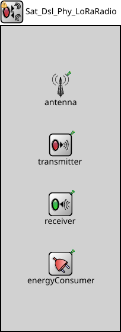

Package: Nodes._20_Satellite.DSL._10_Physical
Sat_Dsl_Phy_LoRaRadio
compound module(no description)

Inheritance diagram
The following diagram shows inheritance relationships for this type. Unresolved types are missing from the diagram.
Used in compound modules
| Name | Type | Description |
|---|---|---|
| Sat_Dsl_Phy | compound module | (no description) |
Extends
| Name | Type | Description |
|---|---|---|
| FlatRadioBase | compound module |
This module servces as a base module for flat radio models. |
Parameters
| Name | Type | Default value | Description |
|---|---|---|---|
| radioMediumModule | string | "radioMedium" |
module path of the medium module where this radio communicates |
| energySourceModule | string | "" |
module path of the energy source module which provides energy to the radio |
| initialRadioMode | string | "off" | |
| switchingTimes | string | "ms 0 0 0 0 0 0 0 0 0 0 0 0 0 0 0 0 0 0 0 0 0 0 0 0 0" |
time parameters to switch between radio modes |
| sendRawBytes | bool | false |
when true packets are serialized into a sequence of bytes before sending out |
| separateTransmissionParts | bool | false |
when enabled the transmission of preamble, header and data part are simulated separately |
| separateReceptionParts | bool | false |
when enabled the reception of preamble, header and data part are simulated separately |
| displayCommunicationRange | bool | false |
if true communication range is displayed as a blue circle around the node |
| displayInterferenceRange | bool | false |
if true interference range is displayed as a gray circle around the node |
| centerFrequency | double | 2450 MHz |
center frequency of the band where the radio transmits and receives signals on the medium |
| bandwidth | double | 0.25 MHz |
bandwidth of the band where the radio transmits and receives signals on the medium |
| iAmGateway | bool | true | |
| satIndex | int | 0 |
Properties
| Name | Value | Description |
|---|---|---|
| display | i=block/wrxtx | |
| class | radio::Sat_Dsl_Phy_LoRaRadio | |
| networkNode |
Gates
| Name | Direction | Size | Description |
|---|---|---|---|
| upperLayerIn | input | ||
| upperLayerOut | output | ||
| radioIn | input |
Signals
| Name | Type | Unit |
|---|---|---|
| receptionStateChanged | long | |
| radioModeChanged | long | |
| receptionEnded | ||
| LoRaGWRadioReceptionFinishedCorrect | long | |
| transmittedSignalPartChanged | long | |
| packetReceivedFromUpper | cPacket | |
| receivedSignalPartChanged | long | |
| packetErrorRate | ||
| LoRaGWRadioReceptionFinishedIgnoring | long | |
| bitErrorRate | ||
| transmissionStarted | ||
| receptionStarted | ||
| symbolErrorRate | ||
| packetSentToUpper | cPacket | |
| droppedPacket | ||
| LoRaGWRadioReceptionStarted | long | |
| transmissionStateChanged | long | |
| listeningChanged | ||
| transmissionEnded | ||
| minSNIR |
Statistics
| Name | Title | Source | Record | Unit | Interpolation Mode |
|---|---|---|---|---|---|
| receptionState | Radio reception state | receptionStateChanged | count, vector | sample-hold | |
| bitErrorRate | Bit error rate | bitErrorRate(packetSentToUpper) | histogram | ||
| LoRaGWRadioReceptionFinishedCorrect | LoRaGWRadioReceptionFinishedCorrect | count, vector | |||
| radioMode | Radio mode | radioModeChanged | count, vector | sample-hold | |
| packetErrorRate | Packet error rate | packetErrorRate(packetSentToUpper) | histogram | ||
| symbolErrorRate | Symbol error rate | symbolErrorRate(packetSentToUpper) | histogram | ||
| transmissionState | Radio transmission state | transmissionStateChanged | count, vector | sample-hold | |
| LoRaGWRadioReceptionStarted | LoRaGWRadioReceptionStarted | count, vector | |||
| minSnir | Min SNIR | minimumSnir(packetSentToUpper) | histogram |
Source code
module Sat_Dsl_Phy_LoRaRadio extends FlatRadioBase { parameters: @networkNode(); @signal[LoRaGWRadioReceptionStarted](type=long); // optional @statistic[LoRaGWRadioReceptionStarted](source=LoRaGWRadioReceptionStarted; record=count,vector); @signal[LoRaGWRadioReceptionFinishedCorrect](type=long); // optional @statistic[LoRaGWRadioReceptionFinishedCorrect](source=LoRaGWRadioReceptionFinishedCorrect; record=count,vector); @signal[LoRaGWRadioReceptionFinishedIgnoring](type=long); @signal[packetSentToUpper](type=cPacket); @signal[packetReceivedFromUpper](type=cPacket); @signal[radioModeChanged](type=long); @signal[listeningChanged]; @signal[receptionStateChanged](type=long); @signal[transmissionStateChanged](type=long); @signal[receivedSignalPartChanged](type=long); @signal[transmittedSignalPartChanged](type=long); @signal[transmissionStarted]; @signal[transmissionEnded]; @signal[receptionStarted]; @signal[receptionEnded]; @signal[minSNIR]; @signal[packetErrorRate]; @signal[bitErrorRate]; @signal[symbolErrorRate]; @signal[droppedPacket]; @statistic[radioMode](title="Radio mode"; source=radioModeChanged; record=count,vector; interpolationmode=sample-hold); @statistic[receptionState](title="Radio reception state"; source=receptionStateChanged; record=count,vector; interpolationmode=sample-hold); @statistic[transmissionState](title="Radio transmission state"; source=transmissionStateChanged; record=count,vector; interpolationmode=sample-hold); @statistic[minSnir](title="Min SNIR"; source=minimumSnir(packetSentToUpper); record=histogram); @statistic[packetErrorRate](title="Packet error rate"; source=packetErrorRate(packetSentToUpper); record=histogram); @statistic[bitErrorRate](title="Bit error rate"; source=bitErrorRate(packetSentToUpper); record=histogram); @statistic[symbolErrorRate](title="Symbol error rate"; source=symbolErrorRate(packetSentToUpper); record=histogram); antenna.typename = default("ConstantGainAntenna"); transmitter.typename = default("LoRaTransmitter"); receiver.typename = default("LoRaReceiver"); centerFrequency = 2450 MHz; // B_20dB ATmega256RFR2 (page 564) // *.bandwidth = default(2.8 MHz); // what is meant by bandwidth here? // the B_20dB bandwidth would lead to far too low BERs bandwidth = default(0.25 MHz); // 802.15.4-2006 (page 28) *.bitrate = default(250 kbps); // PHY Header, 802.15.4-2006 (page 43) // 4 octets Preamble // 1 octet SFD // 7 bit Frame length // 1 bit Reserved *.headerBitLength = (4*8 + 1*8 + 7 + 1) * 1 b; transmitter.headerLength = 5 B; // RSSI sensitivity (ATmega256RFR2, page 566) receiver.energyDetection = default(-90dBm); // Receiver sensitivity (ATmega256RFR2, page 565) // TODO That is not quite true, because sensitivity // is defined as the input signal power that yields // a PER < 1% for a PSDU of 20 octets, but INET handles it // as minimum reception power. receiver.sensitivity = default(-100dBm); // There is no fixed boundary, because of the // DSSS and the capture effect. Taking the sensitivity minus some // arbitrary value as an approximate guess. receiver.minInterferencePower = default(-120dBm); // Minimum SNIR // -8 dB results into 98% PER for a PSDU of 20 octets receiver.snirThreshold = default(-8 dB); // TX Output power (typ. 3.5 dBm, ATmega256RFR2, page 564) transmitter.power = default(2.24mW); transmitter.preambleDuration = 0.001s; bool iAmGateway = default(true); int satIndex = default(0); @class(radio::Sat_Dsl_Phy_LoRaRadio); }File: src/Nodes/_20_Satellite/DSL/_10_Physical/Sat_Dsl_Phy_LoRaRadio.ned
 This documentation is released under the Creative Commons license
This documentation is released under the Creative Commons license